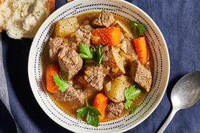

>
Beef Stew
Beef Stew

Description
This slow cooker beef stew is the perfect low maintenance
meal for chilly fall and winter nights.
Full of cozy flavor and hearty ingredients, this beef stew
recipe will warm you up from the inside out.
Ingredients
- Flour
- Stew meat
- Seasonings
- Broth
- Vegetables
Steps
-
Combine ingredients: Place the beef in the
slow cooker, then toss with flour, salt, and pepper. Add the
broth, vegetables, Worcestershire sauce, paprika, garlic, and
bay leaf. Stir to combine.
-
Set slow cooker: Cover the Crock-Pot and
cook on Low for 8 to 12 hours or on High for 4 to 6 hours.